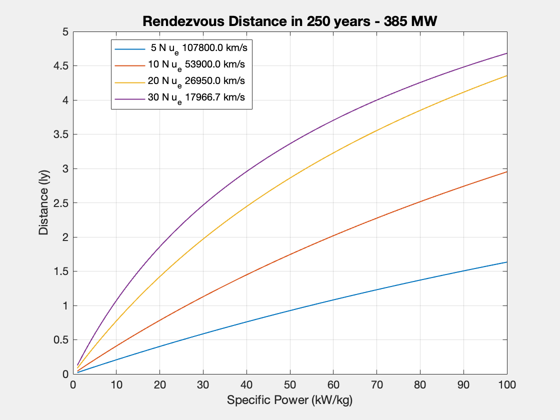
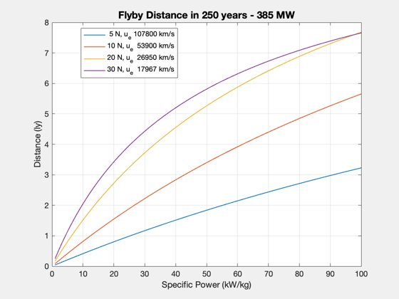
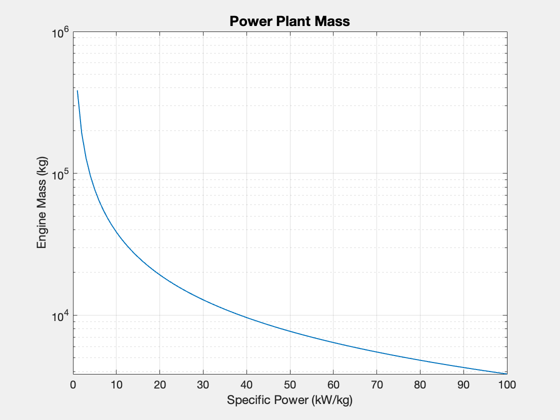

Contents
>100 MW engine analysis to interstellar distances, flyby and rendezvous
calculated for both 325 and 500 years for the Interstellar paper
%-------------------------------------------------------------------------- % See also: Straight2DStructure, TripDistance, FlybyConstantThrust %-------------------------------------------------------------------------- %-------------------------------------------------------------------------- % Copyright (c) 2017 Princeton Satellite Systems, Inc. % All rights reserved. %--------------------------------------------------------------------------
Constants
lY = 9.4607e12; secInYear = 365.25*86400;
Mission parameters
g = Straight2DStructure; g.mP = 1000; % kg g.f = 0.01; % aggressive fuel fraction (kg/kg) thrust = [5 10 20 30]; % N years = 250; sigma = linspace(1,100); % specific power, kW/kg %eff = 0.3; %power = 100e6; % eff = 0.7; % efficiency, power (W) to thrust (N) power = 385e6; % W
Calculations
n = length(sigma); m = length(thrust); s = zeros(m,n); g.tF = years*secInYear; g.v0 = 0; tL = cell(m,1); mE = power./sigma/1000; uE = 2*eff*power./thrust/1000; for j = 1:length(thrust) g.uE = uE(j); tL{j} = sprintf('%2.0f N u_e %5.1f km/s',thrust(j), g.uE); for k = 1:n g.mE = mE(k); s(j,k) = TripDistance( thrust(j), g ); end end
Plots
yL = {'Distance (ly)' 'Engine Mass (kg)'};
str = sprintf('Rendezvous Distance in %d years - %g MW',years,power/1e6);
Plot2D(sigma,s/lY, 'Specific Power (kW/kg)',yL{1},str);
legend(tL,'location','best');
for j = 1:length(thrust)
tL{j} = sprintf('%2.0f N, u_e %6.0f km/s',thrust(j), uE(j));
for k = 1:n
mDot = thrust(j)/(uE(j)*1000);
mF = mDot*g.tF;
m0 = g.mP + mE(k) + (1+g.f)*mF;
s(j,k) = FlybyConstantThrust( thrust(j), uE(j), m0, g.tF );
end
end
yL = {'Distance (ly)' 'Engine Mass (kg)'};
str = sprintf('Flyby Distance in %d years - %g MW',years,power/1e6);
Plot2D(sigma,s/lY, 'Specific Power (kW/kg)',yL{1},str);
legend(tL,'location','best');
Plot2D(sigma,mE, 'Specific Power (kW/kg)',yL{2},'Power Plant Mass','ylog');
%--------------------------------------
% $Id: 76bec7979f6bd948670dba63ecf55057e2d4fb23 $
  